import cantera as ct
import numpy as np
import pandas as pd
import matplotlib.pyplot as plt
Task 1 - Equivalence Ratio Sweep¶
def equilibrium_temperature(phi, fuel="H2", T_u=300.0, p=101325.0,
mechanism="h2o2.yaml",
oxidizer="O2:1, N2:3.76"):
"""
Return the adiabatic flame temperature for a single condition.
Parameters
----------
phi : float
Equivalence ratio.
fuel : str
Cantera fuel string (default: "H2").
T_u : float
Unburned mixture temperature in K (default: 300 K).
p : float
Pressure in Pa (default: 1 atm).
mechanism : str
Cantera mechanism file (default: "h2o2.yaml").
oxidizer : str
Oxidizer composition string (default: "O2:1, N2:3.76").
Returns
-------
float
Adiabatic flame temperature in K.
"""
...
gas = ct.Solution(mechanism)
gas.set_equivalence_ratio(phi, fuel, oxidizer)
gas.TP = T_u, p
gas.equilibrate("HP")
return gas.T
phi = 1.0
T_H2 = equilibrium_temperature(phi)
print(f"Adiabatic flame temperature for {phi} equivalence ratio: {T_H2:.2f} K")
Output
Adiabatic flame temperature for 1.0 equivalence ratio: 2387.64 K
def equilibrium_sweep(phi_range, fuel="H2", T_u=300.0, p=101325.0,
mechanism="h2o2.yaml", oxidizer="O2:1, N2:3.76"):
"""
Return T_ad for an array of equivalence ratios.
Parameters
----------
phi_range : array-like
Array of equivalence ratios.
Returns
-------
numpy.ndarray
Adiabatic flame temperatures in K, same shape as phi_range.
"""
...
phi_range = np.asarray(phi_range, dtype=float)
states = ct.SolutionArray(ct.Solution(mechanism), shape=phi_range.shape)
states.set_equivalence_ratio(phi_range, fuel, oxidizer)
states.TP = T_u, p
states.equilibrate("HP")
return states.T
phi_min = 0.1
phi_max = 4.0
plt.figure(figsize=(8, 5))
for T_u in [200, 300, 400, 500]:
phi_values = np.linspace(phi_min, phi_max, 60)
T_ad_values = equilibrium_sweep(phi_values, T_u=T_u)
plt.plot(phi_values, T_ad_values, marker='o', label=f"$T_u$ = {T_u} K")
peak = np.argmax(T_ad_values)
plt.axvline(x=phi_values[peak], color='red', linestyle='--', alpha=0.5)
print(f"Peak adiabatic flame temperature occurs at phi = {phi_values[peak]:.2f}")
plt.title("Adiabatic Flame Temperature vs Equivalence Ratio")
plt.xlabel("Equivalence Ratio (phi)")
plt.ylabel("Adiabatic Flame Temperature (K)")
plt.grid()
plt.legend()
plt.show()
Output
Peak adiabatic flame temperature occurs at phi = 1.09
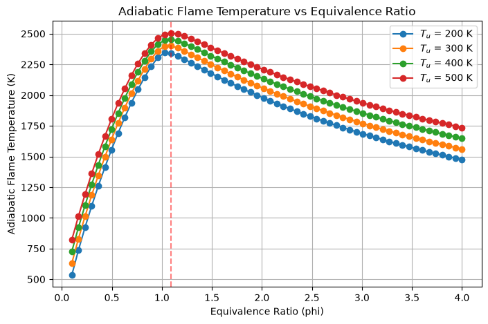
p_atm = ct.one_atm
phi_min = 0.1
phi_max = 4.0
plt.figure(figsize=(8, 5))
for p in [0.5, 1.0, 2.0, 3.0,10.0]:
phi_values = np.linspace(phi_min, phi_max, 50)
T_ad_values = equilibrium_sweep(phi_values, p=p * p_atm)
plt.plot(phi_values, T_ad_values, marker='o', label=f"$p$ = {p} Pa")
plt.title("Adiabatic Flame Temperature vs Equivalence Ratio")
plt.xlabel("Equivalence Ratio (phi)")
plt.ylabel("Adiabatic Flame Temperature (K)")
plt.grid()
plt.legend()
plt.show()
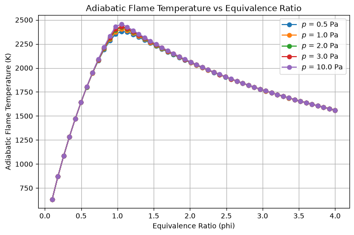
Task 2 - Preheat Temperature Sweep¶
def equilibrium_sweep_Tu(T_u_range, phi=1.0, fuel="H2", p=101325.0,
mechanism="h2o2.yaml", oxidizer="O2:1, N2:3.76"):
"""Return T_ad for an array of unburned temperatures."""
T_u_range = np.asarray(T_u_range, dtype=float)
states = ct.SolutionArray(ct.Solution(mechanism), shape=T_u_range.shape)
states.set_equivalence_ratio(phi, fuel, oxidizer)
states.TP = T_u_range, p
states.equilibrate("HP")
return states.T
equilibrium_sweep_Tu([200, 300, 400, 500])
Output
array([2334.67298638, 2387.63690001, 2438.11277218, 2485.95587179])
gradient
Output
array([0.85427384, 0.85439156, 0.85445167, 0.85449856, 0.85456934,
0.85469393, 0.85489511, 0.85518858, 0.85558297, 0.85607992,
0.85667407, 0.85735313, 0.85809794, 0.85888253, 0.85967421,
0.86043375, 0.8611155 , 0.86166769, 0.86203268])
plt.figure(figsize=(8, 5))
for phi in [0.4, 0.7, 1.0, 1.3, 1.6]:
Ts = np.linspace(300, 800, 20)
Tad_values = equilibrium_sweep_Tu(Ts, phi=phi)
gradient = (Tad_values[-1] - Tad_values[0])/(Ts[-1] - Ts[0])
plt.plot(Ts, Tad_values, marker='o', label=f"$\\phi$ = {phi}, grad = {gradient:.2f}")
plt.legend()
plt.title("Adiabatic Flame Temperature vs Unburned Temperature")
plt.xlabel("Unburned Temperature (K)")
plt.ylabel("Adiabatic Flame Temperature (K)")
plt.grid()
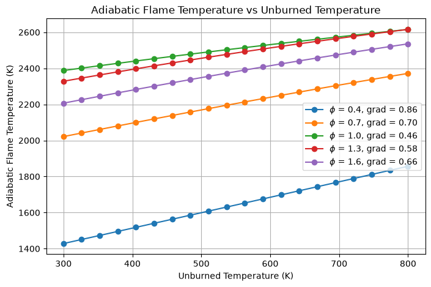
Output
array([0.73079591, 0.72795811, 0.7218909 , 0.71509991, 0.707699 ,
0.69979191, 0.69147223, 0.68282334, 0.67391856, 0.66482134,
0.65558544, 0.64625538, 0.63686683, 0.6274471 , 0.61801577,
0.60858526, 0.59916153, 0.58974471, 0.58032982, 0.57562193])
plt.figure(figsize=(8, 5))
for p in [0.5, 1.0, 2.0, 3.0,10.0]:
phis1 = np.linspace(0.1, 1.0, 30)
phis2 = np.linspace(1.0, 5.0, 30)
phis = np.concatenate((phis1, phis2))
grads = np.zeros_like(phis)
for i, phi in enumerate(phis):
Ts = np.linspace(300, 800, 20)
Tad_values = equilibrium_sweep_Tu(Ts, phi=phi, p=p * p_atm)
gradient = (Tad_values[-1] - Tad_values[0])/(Ts[-1] - Ts[0])
grads[i] = gradient
plt.plot(phis, grads, marker='o', label=f"$p$ = {p} atm")
plt.legend()
plt.title("Gradient of Adiabatic Flame Temperature vs Equivalence Ratio")
plt.xlabel("Equivalence Ratio (phi)")
plt.ylabel("Gradient (K/K)")
plt.grid()
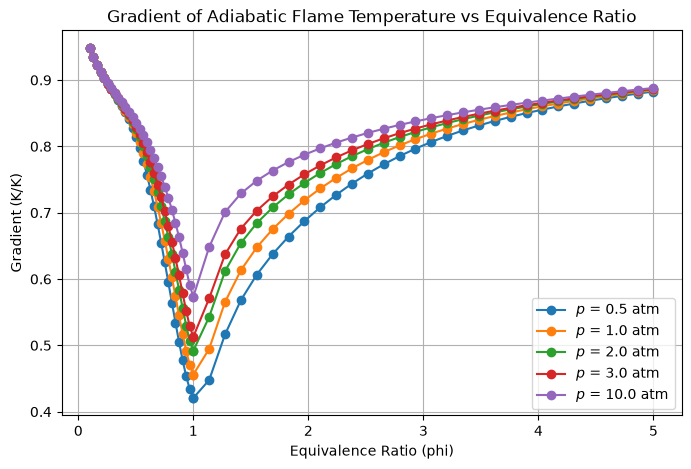
phis = np.linspace(0.1, 4.0, 200)
T300 = equilibrium_sweep(phis, T_u=300.0)
T600 = equilibrium_sweep(phis, T_u=600.0)
gain = T600 - T300 # K gained by preheating
print("phi T_ad(300) T_ad(600) gain (K) gain/300K")
for phi in [0.3, 0.5, 0.7, 1.0, 1.5, 2.0, 3.0]:
k = np.argmin(np.abs(phis - phi))
print(f"{phis[k]:4.2f} {T300[k]:8.1f} {T600[k]:8.1f} {gain[k]:7.1f} {gain[k]/300:6.3f}")
fig, (a, b) = plt.subplots(1, 2, figsize=(12, 4.5))
a.plot(phis, T300, label="$T_u$ = 300 K")
a.plot(phis, T600, label="$T_u$ = 600 K")
a.set(xlabel="Equivalence ratio $\\phi$", ylabel="$T_{ad}$ (K)")
a.grid(); a.legend()
b.plot(phis, gain, "k")
b.axhline(300, ls="--", color="gray", label="preheat = 300 K")
b.axvline(1, ls=":", color="r", label="stoichiometric")
b.set(xlabel="Equivalence ratio $\\phi$", ylabel="Gain $\\Delta T_{ad}$ (K)")
b.grid(); b.legend()
plt.tight_layout()
Output
phi T_ad(300) T_ad(600) gain (K) gain/300K
0.30 1179.3 1443.2 263.9 0.880
0.49 1629.4 1878.3 248.9 0.830
0.71 2033.9 2250.2 216.4 0.721
1.00 2388.4 2531.9 143.5 0.478
1.49 2249.8 2450.8 201.0 0.670
2.00 2060.1 2285.5 225.4 0.751
3.00 1770.9 2020.1 249.2 0.831
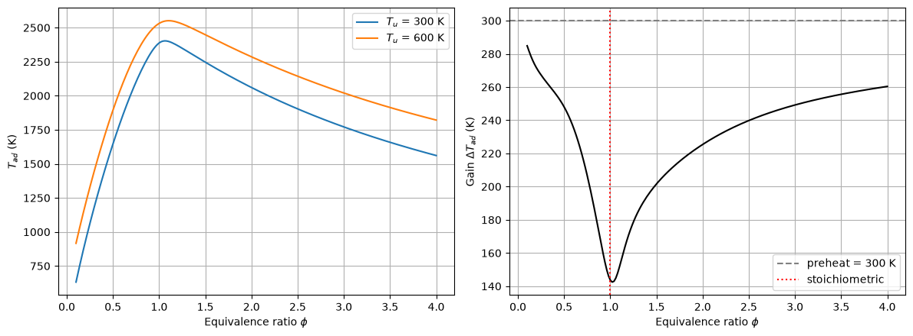
Ts = np.linspace(100, 1000, 100) # unburned temperature (K)
phis = np.linspace(0.1, 4.0, 100) # equivalence ratio
TU, PHI = np.meshgrid(Ts, phis)
TAD = np.array([equilibrium_sweep_Tu(Ts, phi=phi) for phi in phis])
Tu_lines = [200, 300, 400, 500]
phi_lines = [0.4, 0.7, 1.0, 1.3, 1.6]
col_Tu = {T: f"C{k}" for k, T in enumerate(Tu_lines)} # one colour per T_u
col_phi = {f: f"C{k+4}" for k, f in enumerate(phi_lines)} # different set for phi
lift = 15 # K, keeps 3D lines above the surface
fig = plt.figure(figsize=(13, 10))
ax1 = fig.add_subplot(2, 2, 1)
ax2 = fig.add_subplot(2, 2, 2)
ax3 = fig.add_subplot(2, 2, 3, projection="3d")
ax4 = fig.add_subplot(2, 2, 4, projection="3d")
# ── 2D: T_ad vs phi, one line per T_u ─────────────────────────────────────
for T_u in Tu_lines:
ax1.plot(phis, equilibrium_sweep(phis, T_u=T_u), color=col_Tu[T_u],
marker="o", ms=3, markevery=4, label=f"$T_u$ = {T_u} K")
ax1.set(title="$T_{ad}$ vs equivalence ratio",
xlabel="Equivalence ratio $\\phi$", ylabel="Adiabatic flame temperature (K)")
ax1.grid(); ax1.legend()
# ── 2D: T_ad vs T_u, one line per phi ─────────────────────────────────────
for phi in phi_lines:
Tad = equilibrium_sweep_Tu(Ts, phi=phi)
grad = (Tad[-1] - Tad[0]) / (Ts[-1] - Ts[0])
ax2.plot(Ts, Tad, color=col_phi[phi], marker="o", ms=3, markevery=4,
label=f"$\\phi$ = {phi}, grad = {grad:.2f}")
ax2.set(title="$T_{ad}$ vs unburned temperature",
xlabel="Unburned temperature (K)", ylabel="Adiabatic flame temperature (K)")
ax2.grid(); ax2.legend(fontsize=8)
# ── 3D: surface without lines, then with the same coloured lines ─────────
i, j = np.unravel_index(np.argmax(TAD), TAD.shape)
for ax, with_lines in [(ax3, False), (ax4, True)]:
surf = ax.plot_surface(TU, PHI, TAD, cmap="inferno", edgecolor="none",
alpha=0.6 if with_lines else 0.95)
if with_lines:
for phi in phi_lines:
ax.plot(Ts, np.full_like(Ts, phi),
equilibrium_sweep_Tu(Ts, phi=phi) + lift, color=col_phi[phi], lw=2)
for T_u in Tu_lines:
ax.plot(np.full_like(phis, T_u), phis,
equilibrium_sweep(phis, T_u=T_u) + lift, color=col_Tu[T_u], lw=2)
ax.scatter(TU[i, j], PHI[i, j], TAD[i, j], color="cyan", s=40) # hottest grid point
ax.set(xlabel="$T_u$ (K)", ylabel="$\\phi$", zlabel="$T_{ad}$ (K)")
ax.view_init(elev=25, azim=-130)
ax3.set_title("3D surface")
ax4.set_title("3D surface with the 2D lines")
Output
Text(0.5, 0.92, '3D surface with the 2D lines')
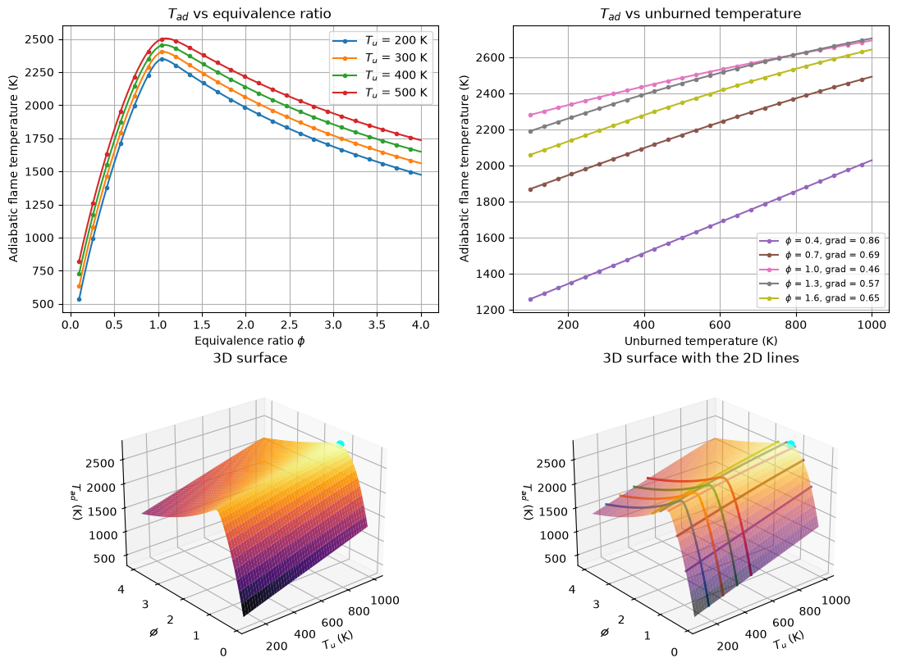
Tast 3 - Pressure Sweep and Equilibrium Composition¶
def equilibrium_state(phi, fuel="H2", T_u=300.0, p=101325.0,
mechanism="h2o2.yaml", oxidizer="O2:1, N2:3.76"):
"""
Return the full equilibrium state as a Cantera Solution object.
Returns the gas object after calling equilibrate("HP"), so the caller
can extract any property (T, X, Y, species mole fractions, etc.).
Returns
-------
cantera.Solution
Gas object at the equilibrium state.
"""
gas = ct.Solution(mechanism)
gas.set_equivalence_ratio(phi, fuel, oxidizer)
gas.TP = T_u, p
gas.equilibrate("HP")
return gas
phi = 1.0
state = equilibrium_state(phi)
state.T
Output
2387.6369000144755
p
Output
0
Ps_atm = np.linspace(0.5, 20.0, 30) # pressure (atm)
phis = [1.0] # lean, near-lean, stoich, rich, very rich
plt.figure(figsize=(8, 5))
for phi in phis:
T_ad = np.array([equilibrium_state(phi, p=p * ct.one_atm).T for p in Ps_atm])
plt.plot(Ps_atm, T_ad, marker="o", ms=4, label=f"$\\phi$ = {phi}")
plt.title("Adiabatic Flame Temperature vs Pressure ($T_u$ = 300 K)")
plt.xlabel("Pressure (atm)")
plt.ylabel("Adiabatic Flame Temperature (K)")
plt.grid()
plt.legend()
plt.show()
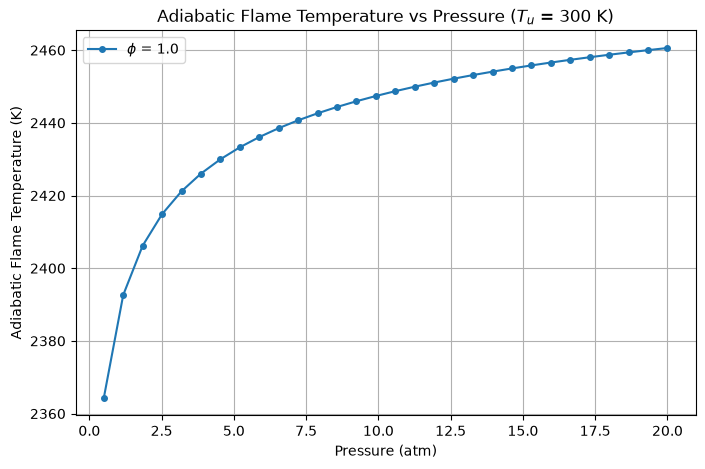
Ps_atm = np.linspace(0.5, 20.0, 30) # pressure (atm)
phis = [0.9, 1.0, 1.1, 1.2, 1.3] # lean, near-lean, stoich, rich, very rich
plt.figure(figsize=(8, 5))
for phi in phis:
T_ad = np.array([equilibrium_state(phi, p=p * ct.one_atm).T for p in Ps_atm])
plt.plot(Ps_atm, T_ad, marker="o", ms=4, label=f"$\\phi$ = {phi}")
plt.title("Adiabatic Flame Temperature vs Pressure ($T_u$ = 300 K)")
plt.xlabel("Pressure (atm)")
plt.ylabel("Adiabatic Flame Temperature (K)")
plt.grid()
plt.legend()
plt.show()
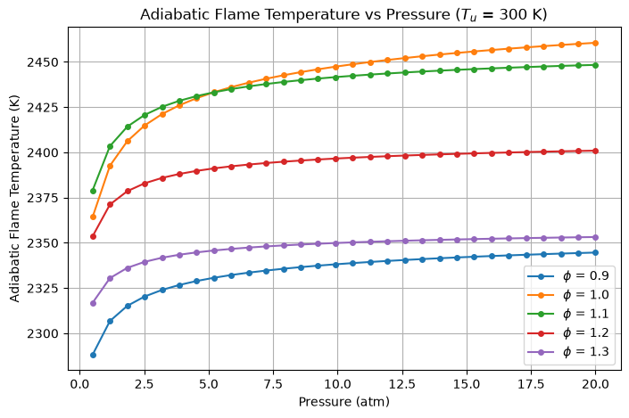
gas.T
Output
2316.869489916884
Ps_atm = np.linspace(0.5, 20.0, 30) # pressure (atm)
phi = 1.0 # stoichiometric
X_OH = np.zeros_like(Ps_atm)
X_H = np.zeros_like(Ps_atm)
for i, p in enumerate(Ps_atm):
state = equilibrium_state(phi, p=p * ct.one_atm) # one equilibrium solve per pressure
X_OH[i] = state.X[state.species_index("OH")]
X_H[i] = state.X[state.species_index("H")]
plt.figure(figsize=(8, 5))
plt.plot(Ps_atm, X_OH, marker="o", ms=4, label="$X_{OH}$")
plt.plot(Ps_atm, X_H, marker="o", ms=4, label="$X_{H}$")
plt.title("OH and H Mole Fractions vs Pressure ($\\phi$ = 1, $T_u$ = 300 K)")
plt.xlabel("Pressure (atm)")
plt.ylabel("Mole fraction")
plt.grid()
plt.legend()
plt.show()
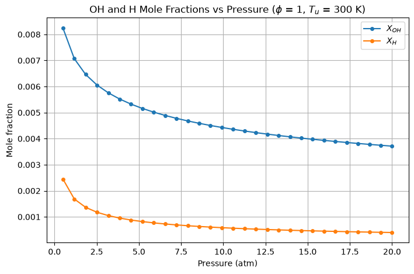
gas = ct.Solution("h2o2.yaml")
Ps_atm = np.logspace(np.log10(0.5), np.log10(20), 40) # log spacing suits a pressure axis
phis = np.linspace(0.4, 2.0, 40)
P, PHI = np.meshgrid(Ps_atm, phis) # shape (len(phis), len(Ps_atm))
st = ct.SolutionArray(gas, shape=P.shape)
st.set_equivalence_ratio(PHI, "H2", "O2:1, N2:3.76")
st.TP = 300.0, P * ct.one_atm
st.equilibrate("HP")
X_OH = st.X[..., gas.species_index("OH")]
X_H = st.X[..., gas.species_index("H")]
fig, axes = plt.subplots(1, 3, figsize=(16, 4.5))
# Contours of log10(mole fraction): radicals span decades
for ax, Z, name in [(axes[0], X_OH, "OH"), (axes[1], X_H, "H")]:
cs = ax.contourf(P, PHI, np.log10(Z), levels=20, cmap="viridis")
ax.set_xscale("log")
ax.set_xlabel("Pressure (atm)")
ax.set_ylabel("$\\phi$")
ax.set_title(f"log$_{{10}}$ $X_{{{name}}}$")
fig.colorbar(cs, ax=ax)
# Line plot at phi ~ 1 on log-log axes, so a straight line = a power law
i = np.argmin(abs(phis - 1.0))
for sp, X in [("OH", X_OH), ("H", X_H)]:
axes[2].loglog(Ps_atm, X[i], marker="o", ms=3, label=sp)
slope = np.polyfit(np.log(Ps_atm), np.log(X[i]), 1)[0]
print(f"{sp}: d ln X / d ln p = {slope:.2f}")
axes[2].set(xlabel="Pressure (atm)", ylabel="Mole fraction")
axes[2].grid(which="both"); axes[2].legend()
plt.tight_layout()
Output
OH: d ln X / d ln p = -0.24
H: d ln X / d ln p = -0.47
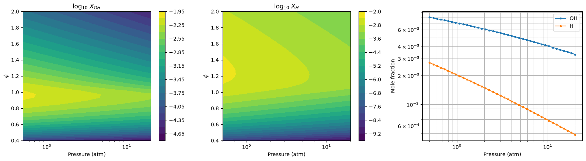
gas = ct.Solution("h2o2.yaml")
phis = np.linspace(0.3, 1.0, 36)
pressures = [1, 10, 30] # atm
T_u = 700.0 # K, typical compressor-outlet temperature
iO, iN2 = gas.species_index("O"), gas.species_index("N2")
T_ad = np.zeros((len(pressures), len(phis)))
X_O = np.zeros_like(T_ad)
dNO = np.zeros_like(T_ad)
for a, p_atm in enumerate(pressures):
for b, phi in enumerate(phis):
gas.set_equivalence_ratio(phi, "H2", "O2:1, N2:3.76")
gas.TP = T_u, p_atm * ct.one_atm
gas.equilibrate("HP")
c = gas.concentrations # kmol/m3
k1 = 1.8e11 * np.exp(-38370.0 / gas.T) # m3/kmol/s
T_ad[a, b] = gas.T
X_O[a, b] = gas.X[iO]
# Zeldovich NO formation rate as a mole-fraction rate (ppm per ms)
dNO[a, b] = 2 * k1 * c[iO] * c[iN2] / gas.density_mole * 1e6 / 1e3
fig, axes = plt.subplots(1, 3, figsize=(15, 4.5))
for a, p_atm in enumerate(pressures):
axes[0].plot(phis, T_ad[a], label=f"{p_atm} atm")
axes[1].semilogy(phis, X_O[a], label=f"{p_atm} atm")
axes[2].semilogy(phis, dNO[a], label=f"{p_atm} atm")
titles = ["Flame temperature", "O-atom mole fraction (dissociation)", "Thermal NO formation rate"]
ylabels = ["$T_{ad}$ (K)", "$X_O$", "d(NO)/dt (ppm/ms)"]
for ax, t, yl in zip(axes, titles, ylabels):
ax.axvspan(0.4, 0.6, color="green", alpha=0.12) # lean-premixed gas-turbine window
ax.set(title=t, xlabel="Equivalence ratio $\\phi$", ylabel=yl)
ax.grid(which="both", alpha=0.4)
ax.legend()
fig.suptitle(f"H$_2$/air, $T_u$ = {T_u:.0f} K, equilibrium state at constant H, P")
plt.tight_layout()
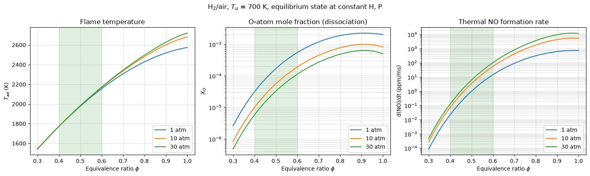
Task 4 - 2D Equilibrium Map¶
def equilibrium_map(phi_range, sweep_range, sweep_param="T_u",
fuel="H2", fixed_T_u=300.0, fixed_p=101325.0,
mechanism="h2o2.yaml", oxidizer="O2:1, N2:3.76"):
"""
Compute a 2D map of T_ad over (phi, sweep_param).
Parameters
----------
phi_range : array-like
Equivalence ratio axis.
sweep_range : array-like
Values of the swept parameter (T_u in K or p in Pa).
sweep_param : {"T_u", "p"}
Which parameter to sweep on the second axis.
Returns
-------
numpy.ndarray, shape (len(phi_range), len(sweep_range))
T_ad in K at each (phi, sweep_param) point.
"""
phi_range = np.asarray(phi_range, dtype=float)
sweep_range = np.asarray(sweep_range, dtype=float)
PHI, SWEEP = np.meshgrid(phi_range, sweep_range, indexing="ij") # (n_phi, n_sweep)
T_u = SWEEP if sweep_param == "T_u" else fixed_T_u
p = SWEEP if sweep_param == "p" else fixed_p
states = ct.SolutionArray(ct.Solution(mechanism), shape=PHI.shape)
states.set_equivalence_ratio(PHI, fuel, oxidizer)
states.TP = T_u, p
states.equilibrate("HP")
return states.T
def plot_equilibrium_map(phi_range, sweep_range, sweep_param="T_u", **kwargs):
"""Plot the T_ad map as a 2D contour (left) and a 3D surface (right).
Extra keyword arguments (fuel, fixed_T_u, fixed_p, ...) go to equilibrium_map.
Returns (fig, T_ad)."""
phi_range = np.asarray(phi_range, dtype=float)
sweep_range = np.asarray(sweep_range, dtype=float)
T_ad = equilibrium_map(phi_range, sweep_range, sweep_param, **kwargs)
if sweep_param == "T_u":
x, xlabel = sweep_range, "Unburned temperature $T_u$ (K)"
else:
x, xlabel = sweep_range / ct.one_atm, "Pressure (atm)"
X, PHI = np.meshgrid(x, phi_range, indexing="xy") # shape (n_phi, n_sweep), matches T_ad
i, j = np.unravel_index(np.argmax(T_ad), T_ad.shape) # hottest point
fig = plt.figure(figsize=(14, 5.5))
ax2d = fig.add_subplot(1, 2, 1)
cs = ax2d.contourf(X, PHI, T_ad, levels=20, cmap="inferno")
ax2d.contour(X, PHI, T_ad, levels=10, colors="k", linewidths=0.4, alpha=0.5)
ax2d.plot(X[i, j], PHI[i, j], "c*", ms=14,
label=f"max {T_ad[i, j]:.0f} K at $\\phi$={PHI[i, j]:.2f}")
ax2d.set(xlabel=xlabel, ylabel="Equivalence ratio $\\phi$", title="2D map")
ax2d.legend(loc="upper left")
fig.colorbar(cs, ax=ax2d, label="$T_{ad}$ (K)")
ax3d = fig.add_subplot(1, 2, 2, projection="3d")
surf = ax3d.plot_surface(X, PHI, T_ad, cmap="inferno", edgecolor="none")
ax3d.scatter(X[i, j], PHI[i, j], T_ad[i, j], color="cyan", s=40)
ax3d.set(xlabel=xlabel, ylabel="$\\phi$", zlabel="$T_{ad}$ (K)", title="3D surface")
ax3d.view_init(elev=25, azim=-130)
fig.colorbar(surf, ax=ax3d, shrink=0.6, pad=0.1, label="$T_{ad}$ (K)")
fig.suptitle(f"Adiabatic flame temperature, {kwargs.get('fuel', 'H2')}/air")
plt.tight_layout()
return fig, T_ad
phis = np.linspace(0.1, 4.0, 60)
# T_u sweep at 1 atm
fig, T_map = plot_equilibrium_map(phis, np.linspace(200, 1200, 50), "T_u")
# pressure sweep at T_u = 300 K (pressure is passed in Pa)
fig, T_map = plot_equilibrium_map(phis, np.linspace(0.5, 20, 50) * ct.one_atm, "p")
# other fuel or mechanism
fig, T_map = plot_equilibrium_map(phis, np.linspace(300, 1200, 40), "T_u",
fuel="CH4", mechanism="gri30.yaml")
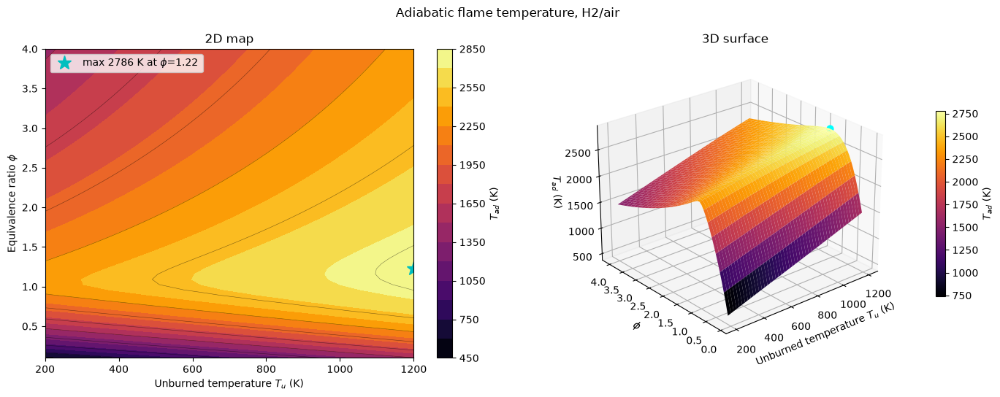
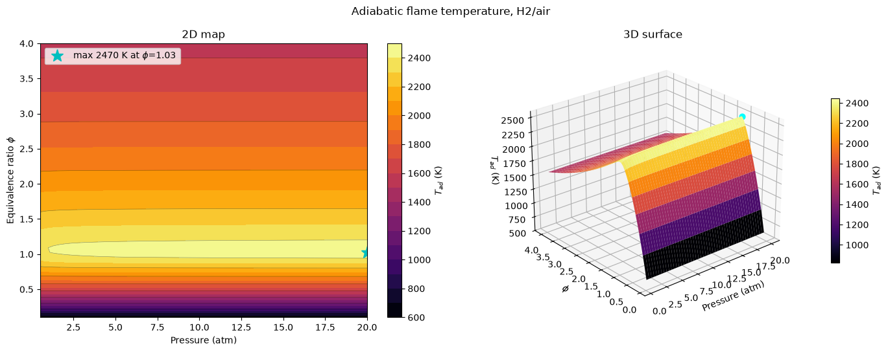
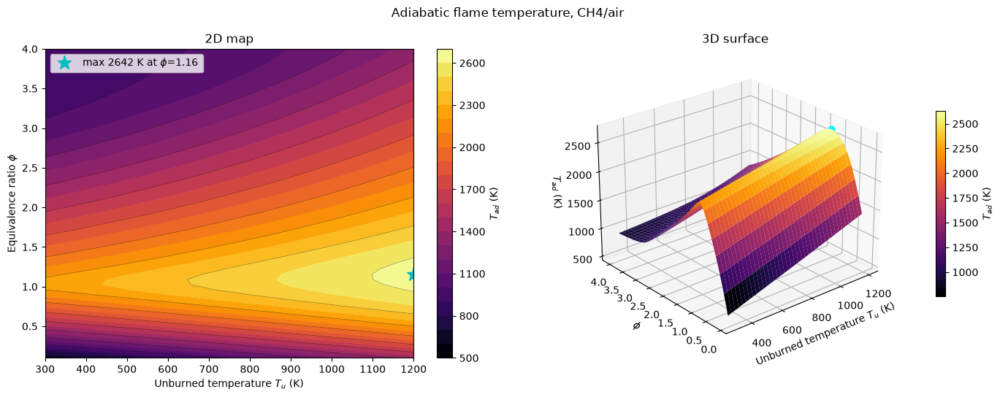